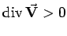
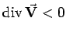
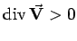
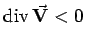

Inhalt Index DeskTop Bronstein

 Vektoranalysis und Feldtheorie Räumliche Differentialoperationen Divergenz des Vektorfeldes
Vektoranalysis und Feldtheorie Räumliche Differentialoperationen Divergenz des Vektorfeldes


Zu einem Vektorfeld  läßt sich ein skalares Feld, das Feld seiner Divergenz, angeben. Im Punkt
läßt sich ein skalares Feld, das Feld seiner Divergenz, angeben. Im Punkt  ist die Divergenz als Volumenableitung des Vektorfeldes definiert:
ist die Divergenz als Volumenableitung des Vektorfeldes definiert:
Man bezeichnet die Divergenz eines Vektorfeldes auch als spezifische Ergiebigkeit oder Quelldichte, denn sie gibt, falls  ein Strömungsfeld beschreibt, die Flüssigkeitsmenge an, die in dem betreffenden Punkt des Feldes
ein Strömungsfeld beschreibt, die Flüssigkeitsmenge an, die in dem betreffenden Punkt des Feldes  je Volumen- und Zeiteinheit neu entsteht. Im Fall  spricht man vom Vorhandensein einer Quelle, im Fall  vom Vorhandensein einer Senke.
je Volumen- und Zeiteinheit neu entsteht. Im Fall  spricht man vom Vorhandensein einer Quelle, im Fall  vom Vorhandensein einer Senke.